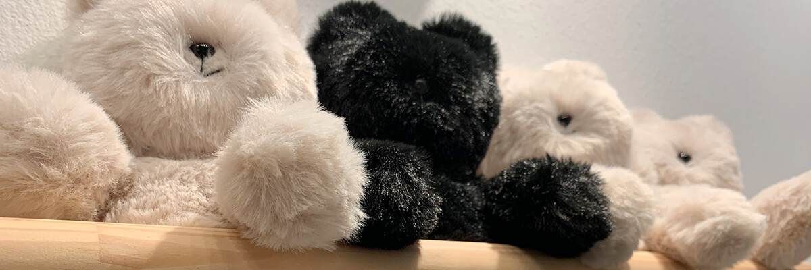
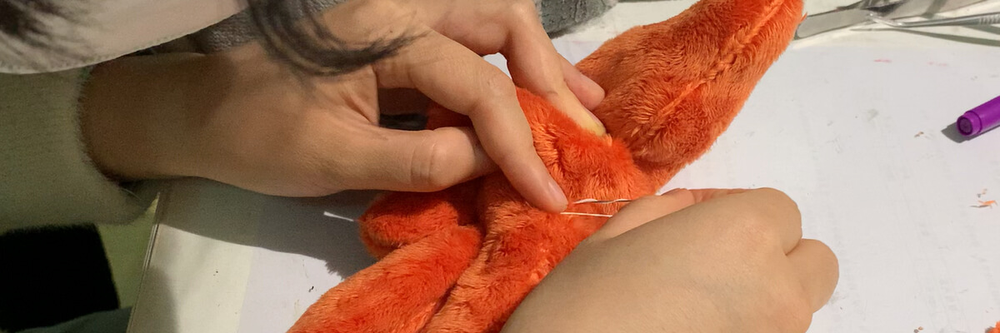
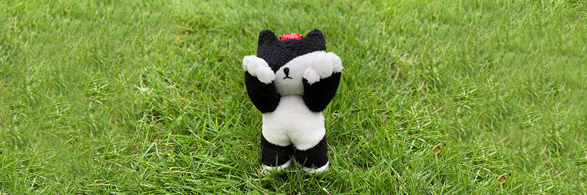

Our Story:
The Looffe Lab
From micro-tailoring to plush engineering.

The Name, The Vibe
The name "Looffe" traces its roots back to the Middle English word for loaf. To us, a stuffed toy shouldn't just be a cold object; it should feel as full, soft, and comforting as a freshly baked loaf of bread. It brings a sense of warmth and happiness the moment you hold it. That’s the exact feeling we strive to handcraft for you.
The Makers Behind the Lab

Yun (The Structure Magician): With a background in Ecology, Yun has a unique obsession with biological structures and spatial design. She is the principal tailor and pattern maker of the studio. Her expertise ranges from crafting 180cm life-size mascot costumes to tailoring 15cm functional micro-haute couture outfits with real zippers and linings.
Jinyi (The Science Geek): A PhD in Biochemistry, Jinyi brings an interactive logic to the lab. From magnetic chromosomes to transforming plushies, Jinyi turns complex scientific concepts into playful, huggable gadgets that spark curiosity.
More Than Just Stitches

Beyond structures and fabrics, our creations carry memories and emotions. Our classic Peek-a-Boo Cat series was inspired by a stray kitten outside our studio who was kindly accepted and fed by a resident cat. Though the stray's story ultimately ended in heartbreak, we created these plushies—cats covering their eyes—to commemorate the brief, tender companionship they shared.
Every piece we make at Looffe carries a piece of our heart. Whether it's a bespoke character or a tiny tailored jacket, we hope it brings a little more imagination and comfort into your everyday life.